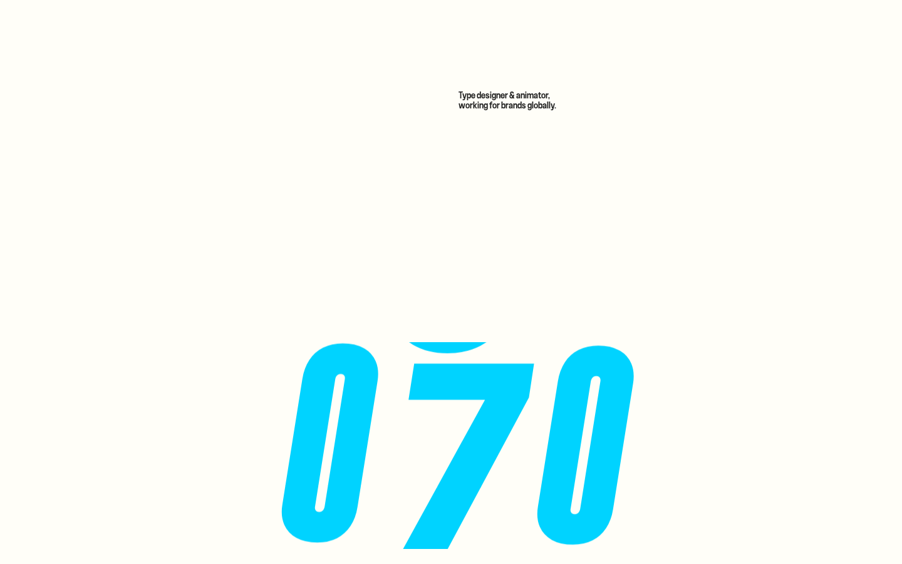

type designer & animator · cyan + acid lime · giant italic condensed caps · kinetic morphing wordmark · sticker 3D lettering · chevron pill CTA · cursor-follow toy · playful motion type
#fffdf8#1f1f1f#00d3ff#1f1f1f#bcf3ff#797979#1f1f1f#00d3ff#1f1f1f#dfff6b#1f1f1f#00d3ff